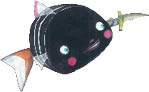
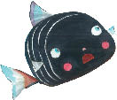

“Buralarda testerebalığı ya da balıkçıl yoktur,” diye yanıtlamış kertenkele. “Testerebalıkları denizde yaşar, balıkçıllarsa pek seyrek bulunur. Bununla birlikte, birkaç pelikana rastlayabilirsin. Dikkat et de içlerinden birinin torbalı gagasına yakalanma.”
“Torbalı gaga da nedir?” diye sormuş Küçük Kara Balık.
“Pelikanların boynunun altında torba gibi sarkan gevşek bir deri vardır,” diye açıklamış kertenkele, “bu torbanın içine su doldururlar. Pelikan yüzerken bazen balıklar hiç farkına varmadan bu torbanın içine girerler. Pelikanın karnı o sırada aç değilse, daha sonra yemek üzere o balıkları torbasında saklar.” Küçük Kara Balık,
“O torbadan kurtulmanın yolu var mı?” diye sormuş.

“Torbayı yırtarak açmadıkça kaçmak olanaksızdır,” diye yanıtlamış onu kertenkele, “Bak ne diyeceğim, benim bir bıçağım var, onu sana vereyim. Bu açgözlü kuşlardan birinin tuzağına düşersen bıçağı kullanır, özgürlüğüne kavuşursun.”
Bunu der demez de kayadaki bir yarığın içine seğirtmiş, biraz sonra da ufak, süslü bir kamayla birlikte geri dönmüş.
“Ah, çok teşekkür ederim,” demiş Küçük Kara Balık, kamayı alırken. “Çok naziksiniz. Borcumu nasıl öderim, bilmem.”
“Bana borcun filan yok,” diye yanıtlamış onu kertenkele. “Bende bunlardan çok var. Buralarda yetişen çalıların dikenlerinden yapıyorum bu kamaları. Senin gibi yürekli küçük balıklara vermek üzere de hazır tutuyorum.”
“Buradan geçen başka balık gördünüz mü?” diye sormuş Küçük Kara Balık heyecanla.
“Çok,” demiş kertenkele, “şimdi de bir araya gelip bir balık sürüsü oluşturdular, bu da balıkçıları deliye çeviriyor.”
Bu sözler Küçük Kara Balık’ın aklını karıştırmış, “Bağışlayın efendim, her şeye burnunu sokan biri gibi görünmek istemem, ama nasıl oluyor da balıklar balıkçıları deli ediyorlar?” diye sormuş.
“Çok akıllıca yapıyorlar bunu,” diye açıklamış kertenkele. “Bir araya toplanıyorlar, balıkçılardan biri ağını suya atınca da ağı yakalayıp derinlere sürüklüyorlar.” Bunu söyler söylemez kulağını kayadaki bir başka yarığa dayamış ve biraz dinledikten sonra “Şimdi gitmem gerek, çocuklarım uyanmış,” diyerek Küçük Kara Balık’tan izin istemiş.
Kertenkele, kovuğuna doğru hızla yola çıktıktan sonra Küçük Kara Balık yolculuğuna devam etmiş. Merak ettiği bir sürü şey varmış: acaba dere gerçekten de denize mi akıyormuş; bir pelikanın tuzağına düşerse ne yaparmış; kendi soyundan gelenleri öldürüp yiyen kılıçbalığı ne biçim bir canavarmış ve balıkçıllar neden kendisine düşmanca davranıyorlarmış?
Küçük Kara Balık durmadan yüzmüş, yüzerken de yeni yaratıklarla karşılaşmış, yeni şeyler öğrenmiş. Zıp zıp zıplamak, bir çağlayanın üzerinden kayıp bir göle atlamak çok hoşuna gidiyormuş.
Daha sonra, suyun yüzeyine yakın yüzerken bir geyiğin aceleyle su içtiğini görmüş. Geyiğe selam verip neden böyle acelesi olduğunu sormuş.
Geyik,
“Peşimde bir avcı var,” diye açıklamış, “Baksana bacağımdan vurdu beni...”

Küçük Kara Balık geyiğin topalladığını görünce onun gerçeği söylemekte olduğunu anlamış ve çok korkmuş. Hızla yüzmeye devam etmiş.
Akşam yaklaşırken, vadinin gitgide genişlemekte, derenin gitgide derinleşmekte olduğunu fark etmiş. Çok heyecanlanmış; yuvasından ayrıldığından beri hiç bu kadar çok balık görmemişmiş çünkü. Çevresine toplanan minik balıklar,
“Sen bir yabancısın, değil mi?” diye sormuşlar ona.
“Evet yabancıyım,” diye yanıtlamış onları, “çok uzaklardan geldim.”
“Nereye gitmek istiyorsun?” diye sormuşlar.
“Derenin ucunu bulmak istiyorum,” demiş Küçük Kara Balık.
“Hangi dere?” diye sormuşlar minik balıklar, hep bu ağızdan.
“Elbette ki içinde yüzmekte olduğumuz bu dere,” diye yanıtlamış onları Küçük Kara Balık, gülümseyerek.
“Biz buna ırmak deriz,” demiş minikler.